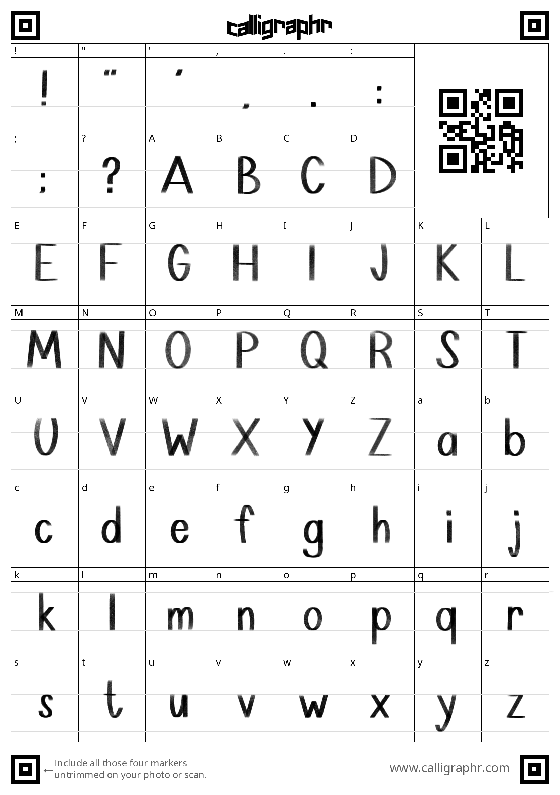

This assignment asks students to think critically about embodiment and their own embodied interactions with the digital tools and environments that populate their daily lives. Students will engage in auto-ethnographic research by observing
and documenting their firsthand experience of a particular digital interaction. Design an infographic that visualizes at least one kind of quantitative information and one kind of qualitative information about their experience in a single, unified
compositional space, whether that be 2D, 3D, or 4D.
Learning Objectives
Engage in self-observation and documentation as method of design-based research
Translate personal, embodied experience into formats legible and accessible to the public
Organize and visualize quantitative and qualitative data in a clear and compelling manner
Throughout the duration of this assignment, I realized how important it is to consider how a user interacts and responds to certain visuals and senses. Thus, as a graphic designer who wants to create work that forms connections with others, I must keep in mind the sense of embodiment when designing. Documenting and recording how people interact and respond to different elements of a design is fundamental to produce successful and effective work.
For this assignment I decided to focus on a mobile app called Finch. This app is primarily used as a self-care motivator, in which one can set goals, track their daily/weekly/monthly progress, learn about self-care strategies, and so much more. I think a unique aspect about this app is the inclusion of the user’s very own finch pet. The more the user accomplishes, reflects on their achievements, and completes self-care exercises, the more points and rewards they earn which can then be spent on their finch pet. Additionally, the more one progresses, so does the finch in terms of personality, growth, and friendship levels.
The graphics and colours used in the app’s design are friendly, welcoming, and uplifting. All of these qualities create an app that is functional and meaningful – to motivate its users. Therefore, I wanted to reflect the same qualities in my own infographic by using very vibrant colours and playful illustrations.
In my early approaches to creating the infographic, I wanted to hand draw all the elements – text and graphics – to further enhance the idea of the app being a personal tracker/motivator. Although my illustrations reflected the app’s mood, it felt disconnected because my visuals were so stylized. The graphics in the app were in a vector-style, so instead I decided to create the graphics for my infographic using Adobe Illustrator to mimic the same vector-style, but with my own designs. Moreover, I incorporated a timeline that reveals the goals and activities that I have completed throughout multiple days of the week to show my personal progress. However, it felt more like an infographic of my daily life as opposed to an infographic about my interaction with the app. Therefore, I had to incorporate more elements that include interactions with my finch to show how I use the app to feel motivated and maintain a positive mood. For instance, my finch sends notifications of positive quotes or phrases throughout each day, and in turn my achievements help my finch grow. In my final draft I decided to mimic the experience of using the app: when you first open the app, the app asks you to rate how motivated you are or your overall mood so far; then you go through a day completing goals and receive positive quotes/phrases from your finch, as well as reflect on your finch’s progress at the end of each day; finally you are able to see your weekly results and statistical data about your accomplishments and rewards earned, your overall satisfaction, motivation, and mood graphs, and how your friendship with your finch deepens as a result of your progress.
Progress Work
Sketch One
Sketch Two
Handwritten Font Template

Feedback
Have data relate to each other
> Group together similar data or focus on relationships between data (e.g., how sleep relates to your overall mood or happiness, or between goal setting and daily check ins)
Legibility
> Handwriting or find a pre-made font?
> Be mindful of colours (have more contrast between colours)
> Handwritten text may work better; try making your own font?
Chronological timeline is helpful in directing the eye and guiding through the images and text
If possible, keep the line going and show multiple days of the week so it includes data from many days as opposed to one
> Becomes one long infographic
Final Extra Notes
Decided to make my own font with my own handwriting, and incorporated Arial Rounded to reflect the app's rounded, playful typeface
Formatted for an Instagram feed infographic (multi-picture post); also works as a poster infographic
Vibrant colours to reflect the app's colourful interface; also creates an uplifting mood that works to motivate/encourage productivity
Hand drawn graphics, though in a more vector-style, similar to the app's graphics